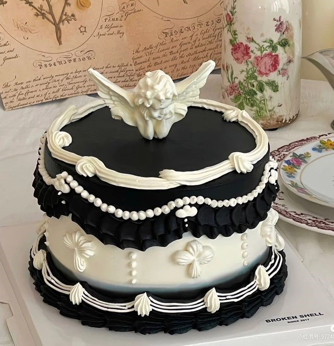
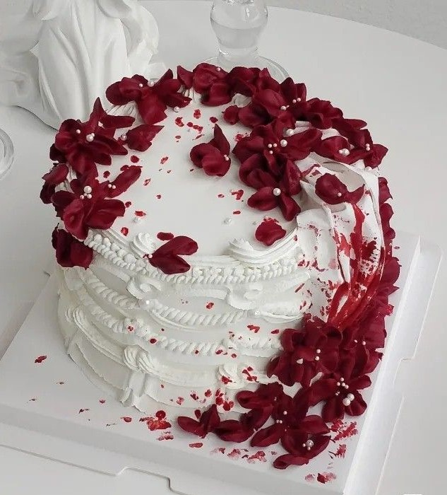

Bolos garota bonita
Cardapio
Laços e Chanel
Um bolo de massa branca com infeites clássicos e delicados o sabor é de sua escolha.
Para os dias de burguesa.
Anjo Chanel
Um belo bolo com massa de biscoitos bem caros e coloração escura.
Para as mais perfeitas e brilhantes.

Coração esculpido
Um lindo bolo que terá sabor dependendo do seu humor e para qual ocasião será.
Perfeito para dias de levesa e poder
Noite de crime
Bolo de massa simples com um recheio de vastas frutas vermelhas.
As podemos nos exautar um pouco.

Coração vermelho
Bolo com um sabor que lembra muito vinho com frutas embebedadas em bebida alcoólica.
Bolo para os dias de paixão e luto